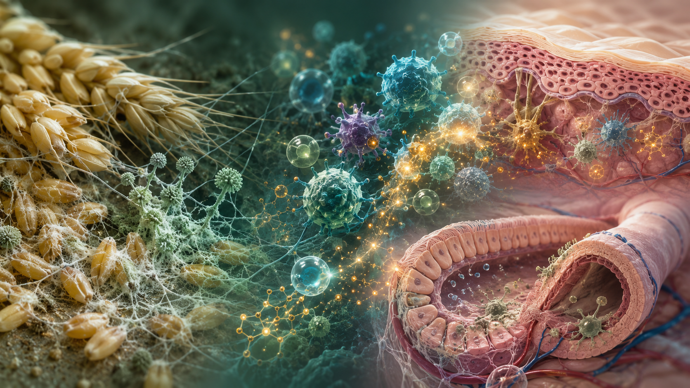

ニバレノールは、抗原提示細胞を介して皮膚炎を悪化させる
Matsuzaka et al. 2024では、NIVの亜急性経口ばく露が、アトピー性皮膚炎モデルの炎症やかゆみを悪化させることが示されました。抗原提示細胞でのMAPKシグナル活性化が、免疫反応を押し上げる鍵として注目されます。

研究紹介 | 食品安全・環境化学物質・免疫毒性
食品や環境の中にごく微量に存在する化学物質は、体に入ったあと、免疫の働きとどのように出会うのでしょうか。私たちは、かび毒や環境化学物質がアレルギー、喘息、アトピー性皮膚炎、乾癬様炎症などに与える影響を、動物モデルを用いて丁寧に調べています。
かび毒という言葉からは、強い毒が一気に体を壊すイメージを持つかもしれません。しかし、近年の研究から見えてきたのは、もっと静かで複雑な姿です。デオキシニバレノール（DON）、ニバレノール（NIV）、フモニシンB1（FB1）、フモニシンB2（FB2）、シトリニンなどのかび毒は、炎症が起きている体内で、免疫細胞や皮膚バリア、かゆみの反応に影響を及ぼすことがあります。
研究室では、食品安全の視点に加えて、人と動物の健康、そしてヒ素やビスフェノールAのような環境化学物質まで視野を広げ、「少量のばく露が、すでにある免疫反応をどう変えるのか」をテーマに研究を進めています。
喘息、アトピー性皮膚炎、乾癬様炎症、かゆみなど、身近な免疫疾患に近いモデルを用いて、化学物質が炎症を強める仕組みを探ります。
穀類や飼料で問題となるDON、NIV、FB1、FB2などを対象に、少量の経口ばく露が免疫反応に与える影響を調べます。
無機ヒ素、ビスフェノールA、エストロゲン受容体に関わる物質など、かび毒以外の環境要因も含めて、免疫との接点を考えます。
Matsuzaka et al. 2024では、NIVの亜急性経口ばく露が、アトピー性皮膚炎モデルの炎症やかゆみを悪化させることが示されました。抗原提示細胞でのMAPKシグナル活性化が、免疫反応を押し上げる鍵として注目されます。
DON関連の研究では、アレルギー性皮膚炎、喘息、乾癬様炎症のモデルで、経口ばく露後の炎症やかゆみ、気道炎症への影響が検討されています。食品中のかび毒を、免疫の「背景因子」として考えるきっかけになります。
Ando et al. 2023およびAndo et al. 2024では、FB2の低濃度経口ばく露がアレルギー炎症や乾癬様炎症を悪化させることが報告されています。特にFB2では、腸管関連リンパ組織の制御性T細胞によるIL-10産生低下など、免疫調節の変化が示唆されています。
Yamaguchi et al. 2023では、シトリニンの経口ばく露により、イミキモド誘導性乾癬モデルの病態が悪化することが示されました。樹状細胞の活性化、IL-17やTNF-αを含む炎症反応、皮膚バリアへの影響が重要な観察点です。
Matsuzaka et al. 2025では、無機ヒ素の経口ばく露がTh2依存性およびTh17依存性のアレルギー病態を強める一方、Th1依存性モデルでは同じような悪化を示さないことが報告されています。環境化学物質と免疫疾患の関係を考える上で、免疫タイプの違いが重要です。
Tajiki-Nishino et al. 2018では、ビスフェノールAがアレルギー性気道炎症を悪化させる一方、皮膚炎では同じ反応を示さないことが報告されています。またWatanabe et al. 2018およびWatanabe et al. 2019のエストロゲン受容体研究は、環境化学物質、性ホルモン様作用、免疫炎症をつなぐ視点を与えます。
DOIは掲載せず、PubMed IDが確認できた論文はPubMedページへリンクしています。